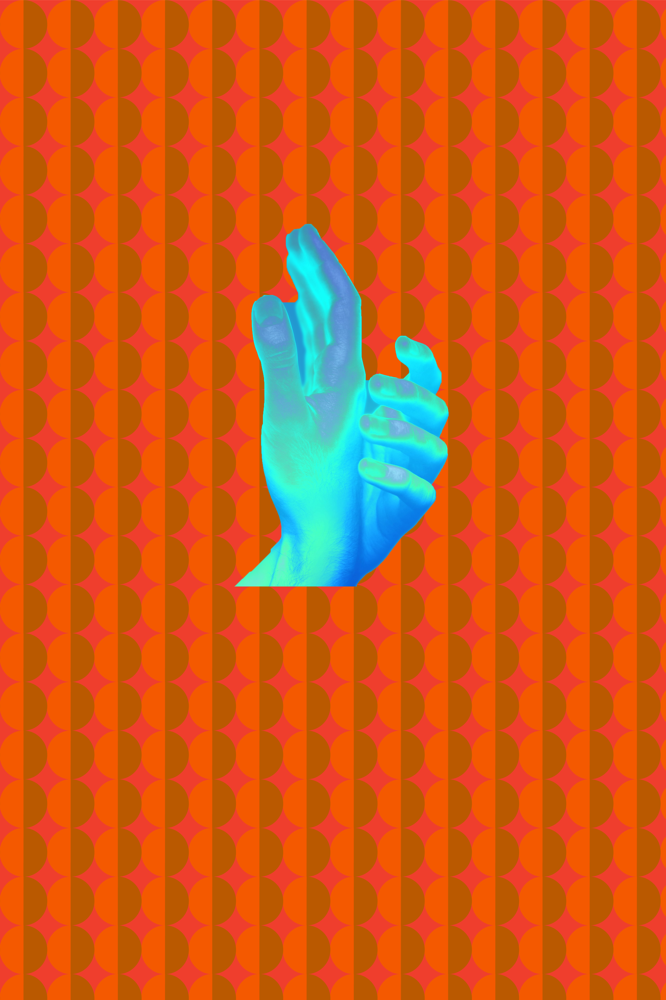
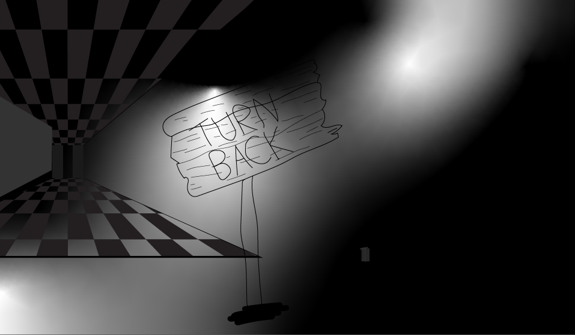
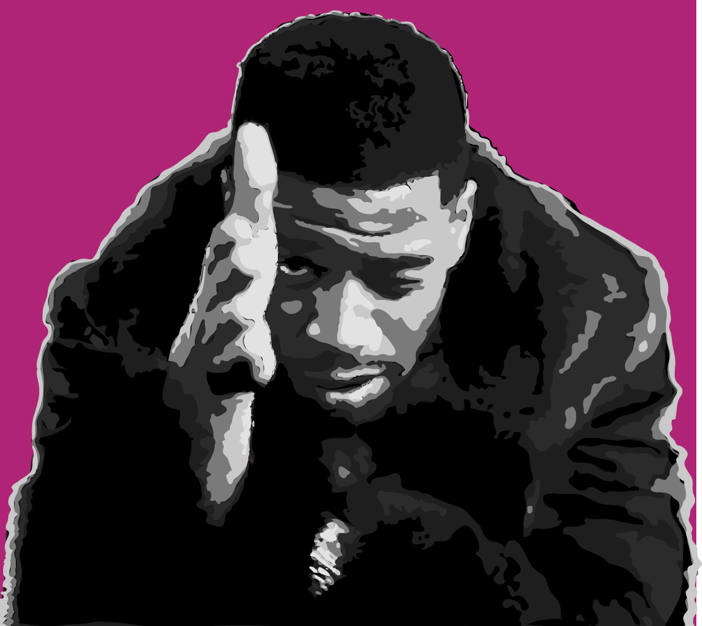
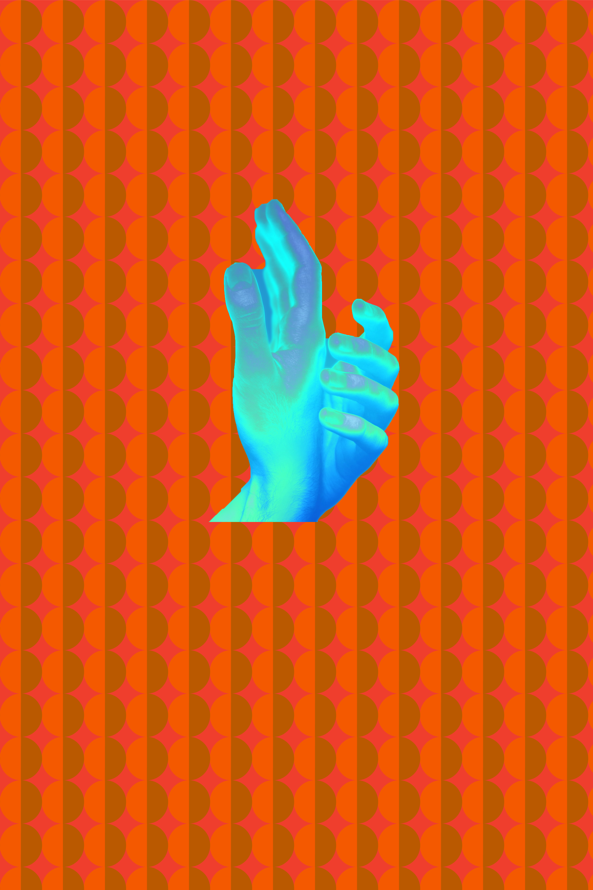
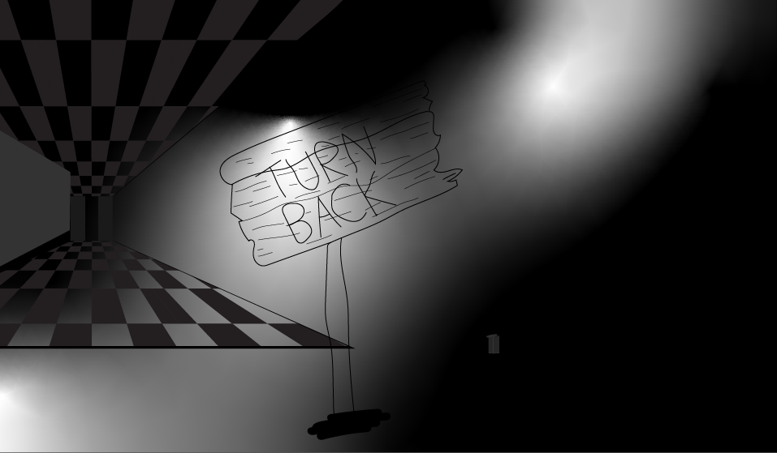
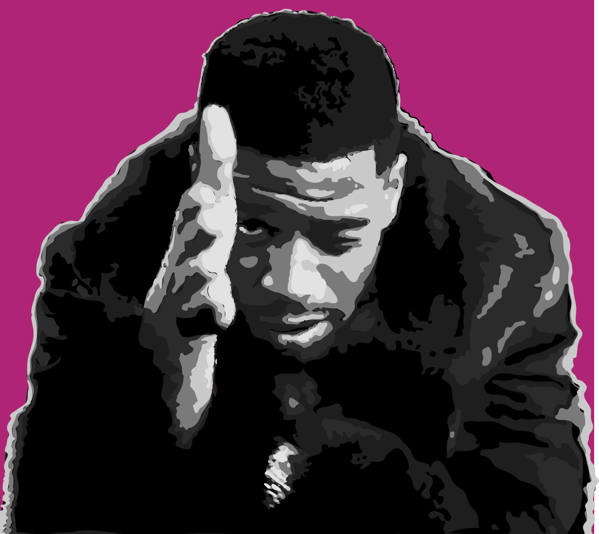

Works done in Adobe Illustrator:
Design I made for my art final.
Grayscale surrealism.
Simple color wheel.
Vector Portrait of Kid Cudi.

Design I made for my art final.
Grayscale surrealism.
Simple color wheel.
Vector Portrait of Kid Cudi.
